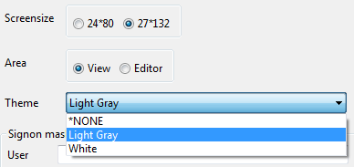
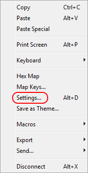

A session theme is used for overriding the default session colors with the colors of the theme. This way you can use your default 5250 settings, such as the keyboard layout, for all sessions but give some sessions a different color theme.
Right-click on an "iSphere 5020 Session" and select the "Change session" option.
Select a theme from the "Theme" combo box or enter a name for creating a new theme.

Confirm the following question with "Yes" when you want to create a new theme:
Please notice that the theme configuration file is not created at this point. Go ahead and open the session to create it. Then select option "Settings..." from the context menu and tweak the colors to make it look nicely. You may also start with a predefined scheme from the "Scheme" combo box:
|  |
Click the "Apply" button for each color that you changed. Save the settings when you are done.
| The theme configuration files are stored in folder %USERPROFILE%\.tn5250j and named ThemeOverlay_*.props where the asterisk equals the name of the theme. |